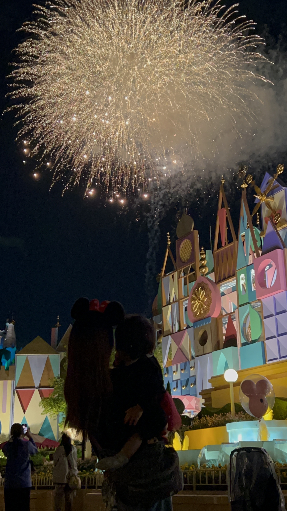
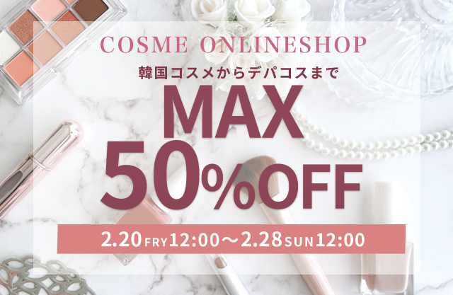
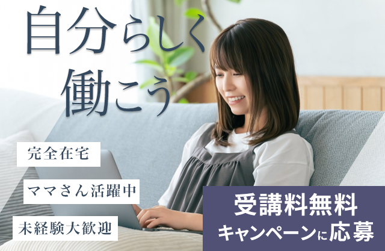

About

- 柘植佑香
- 1997年生まれ
- 千葉県在住
地元愛知県で幼稚園教諭、保育士として６年勤務。
結婚を機に退職し第一子出産後現在は1歳の娘を育てています。
自宅保育の中趣味でインスタグラムで美容アカウントの発信を始めたことをきっかけに
投稿画像の構成や文字配置など「デザイン」の面白さに気付き
Webデザインの道を志すことを決めました。
「どんなデザインなら目に留まるかな」「どう見せたら伝わりやすいかな」と
見てもらう人に寄り添ったデザイナーになれるよう日々勉強しています。
Works
-

スキンケア広告
水々しいブルーを基調に、透明感が伝わるよう制作しました。 成分や効果が一目みて分かりやすいように意識しました。
-

コスメセールバナー
セール感が一目で伝わるよう、数字を大きく配置しています。 コスメオンラインショップということで可愛らしいピンクやボルドーでまとめています。
-

季節限定フラッペ
いちごの瑞々しさが伝わる配色を意識しました。 いちごの甘さと可愛らしさが伝わるよう、配色や写真選定を工夫しています。
-

旅行キャンペーン
季節ならではの写真を使用し、旅行への意欲を引き立てられるようにしました。 また30％オフや期間の数字を強調しました。
-

子ども英語バナー
子供の英語教室ということでポップな楽しさと安心感が伝わるよう明るい配色にしました。 対象年齢をわかりやすく楽しくレッスンできることを一目見てわかるような工夫しました。
-

在宅ワーク講座
信頼感を意識し、落ち着いたトーンでまとめました。 ターゲットである女性や子育て中のママさんへ層を絞ったバナーにしました。
Contact
お仕事の依頼、承ります。
下記のボタンよりお問い合わせください。
(メールソフトが起動します)